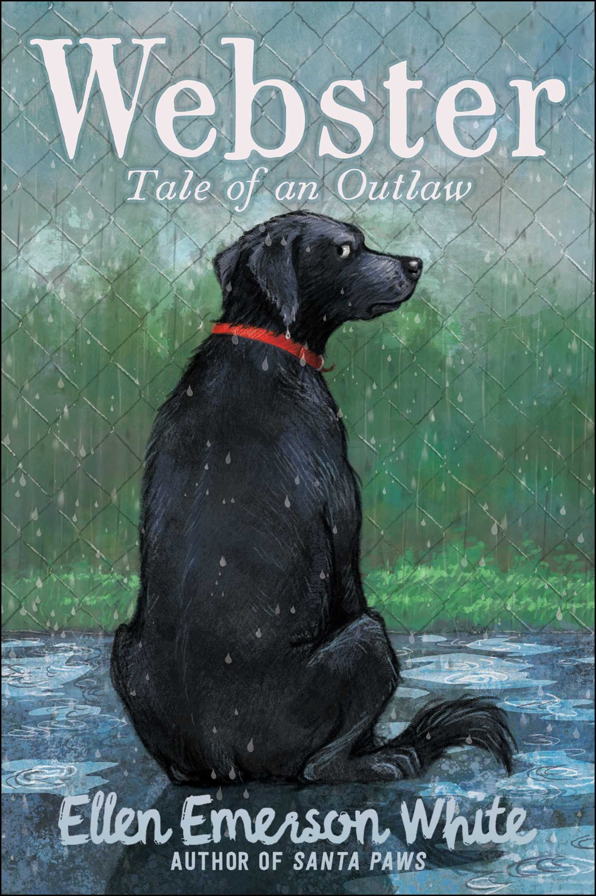

Webster: Tale of an Outlaw
Tossed from home to home, treated unfairly, and ending up in a shelter. This fearless dog named Webster, has dreams of going out into the world and living with the cowboys. But his friends have plans of their own. Will Webster stay behind with his friends or choose a totally different path?